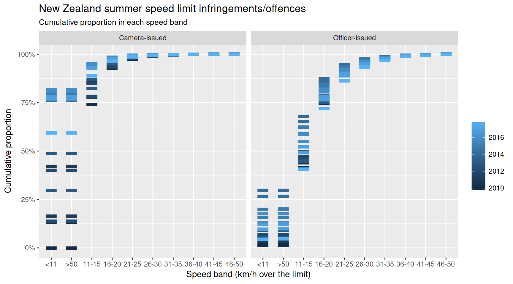
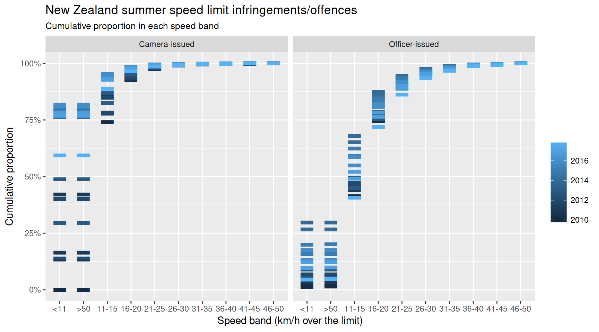

The nzpullover package makes available road policing data from the New Zealand Police in a convenient ‘tidy’ form. Offence categories include speed, alcohol, red light, restraints (seatbelts), mobile phone, fleeing drivers, and speeding police vehicles.
The original data published by the New Zealand Police is available as a spreadsheet here: http://www.police.govt.nz/about-us/publication/road-policing-driver-offence-data-january-2009-june-2018. Please note that this R package is not associated with the New Zealand Police.
The spreadsheet data has been made tidy by using the tidyxl and unpivotr packages. See the scripts in /data-raw. Zipped csv files are available in /inst/extdata.
The New Zealand Police refresh the data approximately quarterly. If this package lags behind, then please open an issue https://github.com/nacnudus/nzpullover/issues. The CRAN version will be updated annually.
Example
Scroll to the bottom for lots more graphs.
 

glimpse(driving_offences)
#> Observations: 60,423
#> Variables: 6
#> $ category <chr> "Red Light", "Red Light", "Red Light", "Red Light", "...
#> $ value <dbl> 78, 105, 123, 138, 88, 101, 72, 121, 96, 157, 123, 97...
#> $ series <chr> "Officer issued red light", "Officer issued red light...
#> $ district <chr> "Auckland", "Auckland", "Auckland", "Auckland", "Auck...
#> $ area <chr> "Auckland Central Area", "Auckland Central Area", "Au...
#> $ month <date> 2009-01-01, 2009-02-01, 2009-03-01, 2009-04-01, 2009...
glimpse(static_camera)
#> Observations: 5,296
#> Variables: 8
#> $ value <dbl> 2347, 888, 12, 320, 828, 645, 634, 117, 447, 865, 551...
#> $ series <chr> "Static Camera-issued speed offences by site", "Stati...
#> $ district <chr> "AUCKLAND CITY", "AUCKLAND CITY", "AUCKLAND CITY", "A...
#> $ area <chr> "AUCKLAND CENTRAL AREA", "AUCKLAND EAST AREA", "AUCKL...
#> $ site <chr> "ACF001", "AC0008", "AC0008", "AC0008", "AC0008", "AC...
#> $ road <chr> "TAMAKI DRIVE", "REMUERA ROAD", "REMUERA ROAD", "REMU...
#> $ section <chr> "BETWEEN SOLENT STREE AND NGAPIPI ROAD", "BETWEEN KOR...
#> $ month <date> 2018-03-01, 2009-01-01, 2009-02-01, 2010-06-01, 2010...
glimpse(excess)
#> Observations: 21,667
#> Variables: 6
#> $ value <dbl> 27, 84, 109, 66, 17, 3, 4, 1, 14, 82, 133, 62, 24, 6,...
#> $ series <chr> "Officer-issued excess speed band", "Officer-issued e...
#> $ district <chr> "Auckland", "Auckland", "Auckland", "Auckland", "Auck...
#> $ area <chr> "Auckland Central Area", "Auckland Central Area", "Au...
#> $ speed <chr> "<11", "11-15", "16-20", "21-25", "26-30", "31-35", "...
#> $ month <date> 2009-12-01, 2009-12-01, 2009-12-01, 2009-12-01, 2009...
glimpse(fleeing_area)
#> Observations: 16,428
#> Variables: 5
#> $ value <dbl> 0, 0, 0, 10, 11, 4, 8, 4, 7, 6, 3, 2, 7, 6, 4, 13, 10...
#> $ series <chr> "Fleeing driver incidents where Area-level detail is ...
#> $ district <chr> "Auckland", "Auckland", "Auckland", "Auckland", "Auck...
#> $ area <chr> "Auckland Central Area", "Auckland Central Area", "Au...
#> $ month <date> 2009-01-01, 2009-02-01, 2009-03-01, 2009-04-01, 2009...
glimpse(fleeing_district)
#> Observations: 5,328
#> Variables: 4
#> $ value <dbl> 10, 14, 26, 22, 24, 17, 27, 19, 21, 15, 18, 14, 19, 1...
#> $ series <chr> "Fleeing driver incidents by district", "Fleeing driv...
#> $ district <chr> "Auckland City", "Auckland City", "Auckland City", "A...
#> $ month <date> 2009-01-01, 2009-02-01, 2009-03-01, 2009-04-01, 2009...
glimpse(police_speeding)
#> Observations: 6,699
#> Variables: 5
#> $ value <dbl> 1, 1, 4, 2, 2, 1, 1, 3, 1, 1, 2, 2, 1, 1, 1, 1, 3, 2,...
#> $ series <chr> "Police vehicle speed - detections by speed camera", ...
#> $ district <chr> "Auckland", "Auckland", "Auckland", "Auckland", "Auck...
#> $ area <chr> "Auckland Central Area", "Auckland Central Area", "Au...
#> $ month <date> 2010-08-01, 2010-09-01, 2010-10-01, 2011-10-01, 2011...
glimpse(police_speeding_band)
#> Observations: 1,893
#> Variables: 6
#> $ value <dbl> 5, 1, 3, 2, 1, 3, 1, 1, 2, 1, 1, 1, 1, 1, 1, 1, 1, 1,...
#> $ series <chr> "Police vehicle speed detections by calendar year* an...
#> $ district <chr> "Auckland", "Auckland", "Auckland", "Auckland", "Auck...
#> $ area <chr> "Auckland Central Area", "Auckland Central Area", "Au...
#> $ speed <chr> "11-15", "16-20", "<11", "11-15", "<11", "11-15", "<1...
#> $ year <date> 2010-01-01, 2010-01-01, 2011-01-01, 2011-01-01, 2012...